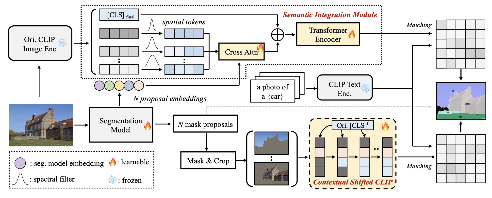
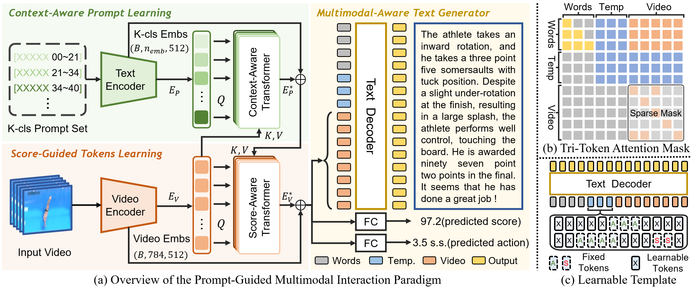
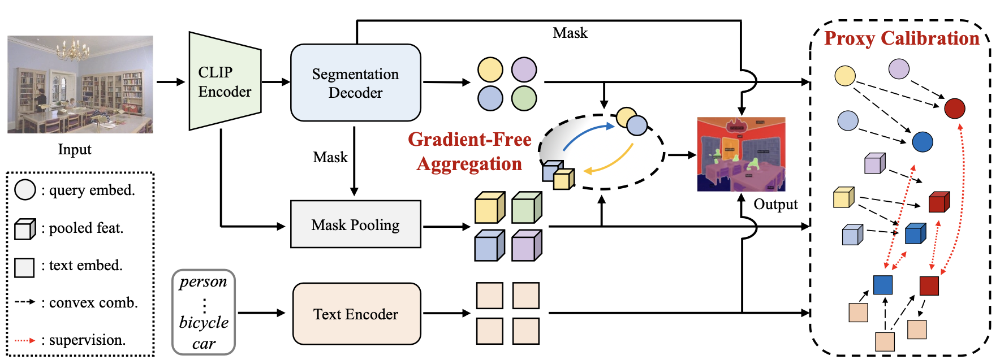

|
Hi! I'm a second-year master student in Tsinghua University Shenzhen International Graduate School, supervised by Prof. Yansong Tang. Before that, I received my bachelor's degree from the School of Computer Science and Technology in the Beijing University of Posts and Telecommunications in 2023. My currect research interest lies in Multimodal LLM and its applications. |
|
* indicates equal contribution |

|
Sule Bai, Mingxing Li, Yong Liu, Jing Tang, Haoji Zhang, Lei Sun, Xiangxiang Chu, Yansong Tang arXiv Preprint, 2025 [Paper] [Code] [Project Page] 
We propose UniVG-R1, a reasoning-guided MLLM for universal visual grounding, which leverages reinforcement learning to enhance reasoning across complex multi-image and multi-modal scenarios. |
|
Sule Bai*, Yong Liu*, Yifei Han, Haoji Zhang, Yansong Tang arXiv Preprint, 2024 [Paper] [Code] 
We propose a training-free method that enhances CLIP's dense representation through self-calibration without introducing new parameters or relying on additional backbones. |
|
|  |
Yong Liu*, Sule Bai*, Guanbin Li, Yitong Wang, Yansong Tang IEEE/CVF Conference on Computer Vision and Pattern Recognition (CVPR), 2024 [Paper] [Code] 
We propose an open-vocabulary segmentation (OVS) method by calibrating in-vocabulary and domain-biased embedding space with generalized contextual prior of CLIP. |
|  |
Shiyi Zhang*, Sule Bai*, Guangyi Chen, Lei Chen, Jiwen Lu, Junle Wang, Yansong Tang IEEE/CVF Conference on Computer Vision and Pattern Recognition (CVPR), 2024 [Paper] [Code] 
We investigate a new problem called narrative action evaluation (NAE) and propose a prompt-guided multimodal interaction framework. |
|  |
Yong Liu*, Songli Wu*, Sule Bai*, Jiahao Wang, Yansong Tang IEEE/CVF International Conference on Computer Vision (ICCV), 2023 [Paper] [Code] We present a new benchmark that differs significantly from the training semantics. And we propose OVSNet to improve the segmentation performance for diverse and open scenarios. |